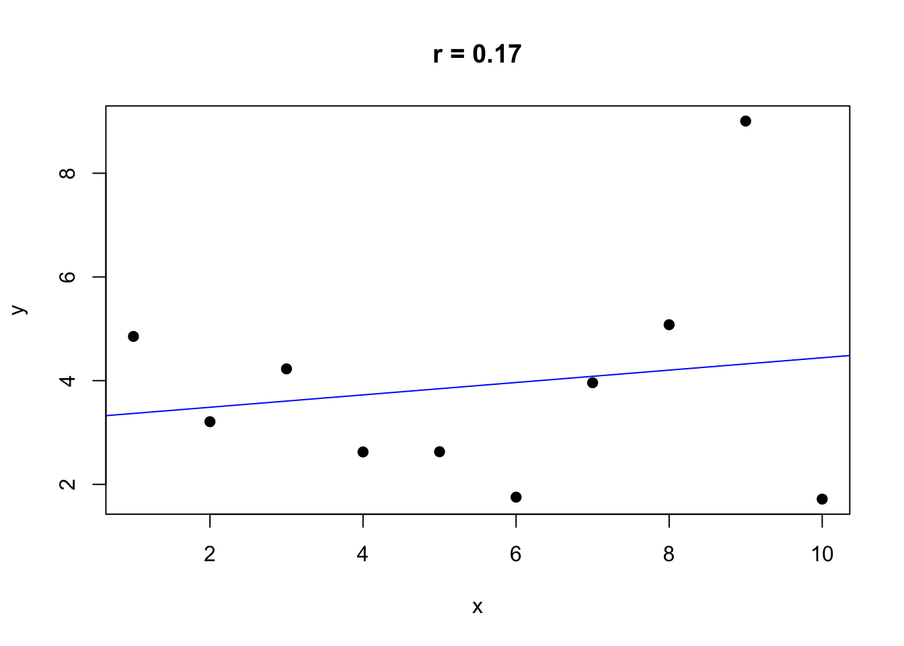
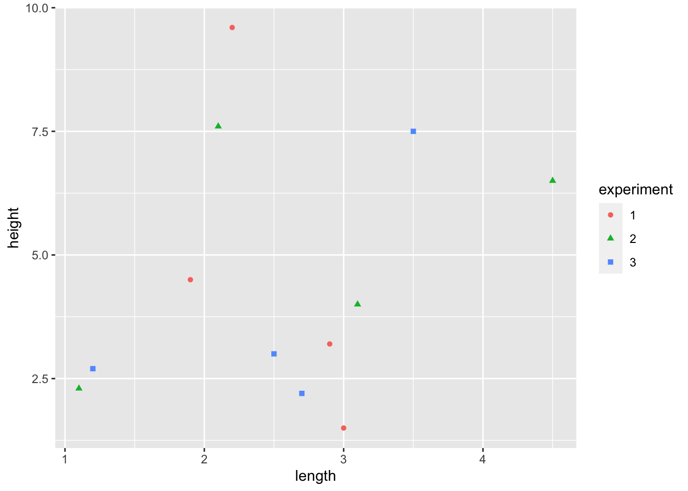
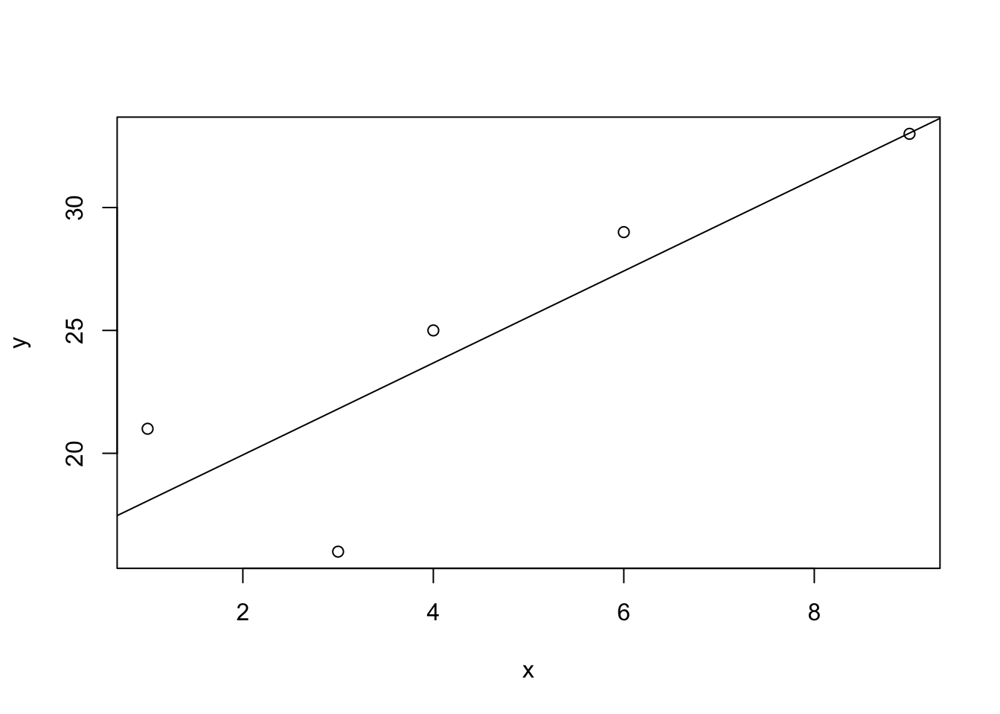
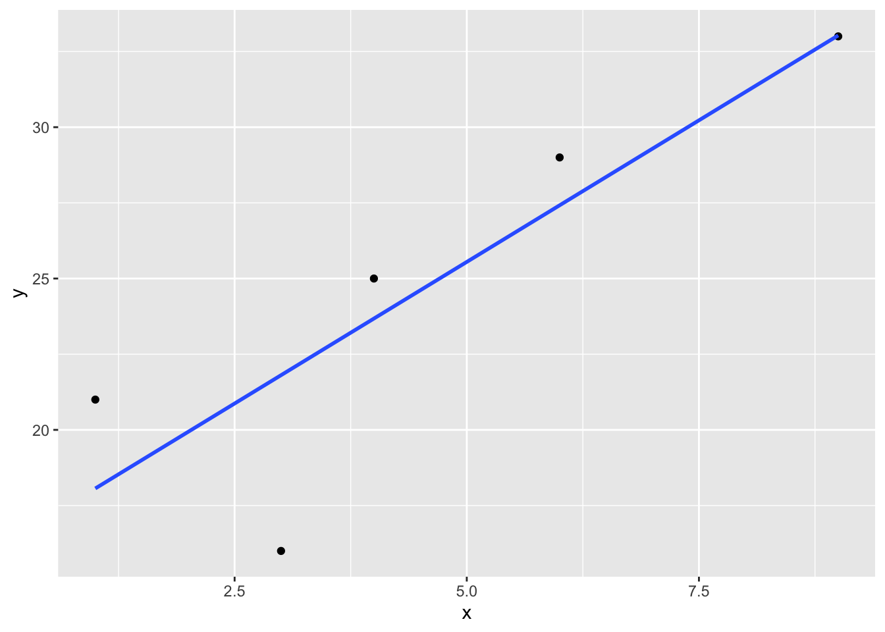

15 ggplot
15.1 Introduction
ggplot2 is an R package for producing data graphics. Unlike the base plot function we learned earlier, ggplot2 creates graphs using a step-by-step process that combines independent layers. This makes ggplot2 a very flexible and powerful tool for producing statistical graphics.
Every plot made using ggplot2 has three key components:
- Data: a data frame
2 Aesthetic mappings: creates the link between data variables (x and y) and visual properties (colour, size or shape of points, etc)
- Geometry (geom) functions: at least one layer that describes the type of graphic
We link these components together to create our plot: plot = data + aesthetics + geometry
15.2 Making scatter plots with ggplot2
We first load the ggplot2 package and import our dataset.
library(ggplot2)
head(ShrubData)## site experiment length width height
## 1 1 1 2.2 1.3 9.6
## 2 1 2 2.1 2.2 7.6
## 3 1 3 2.7 1.5 2.2
## 4 2 1 3.0 4.5 1.5
## 5 2 2 3.1 3.1 4.0
## 6 2 3 2.5 2.8 3.0We begin to build our graphic one step at a time, first using the function ggplot to specify our data frame and set our x and y variables within the aesthetic aes(). When we run this code, it produces a blank figure with our x and y axis set because we haven’t specified the type of graphic we want.
ggplot(data = ShrubData, aes(x = length, y = height))
To add the data, we must choose a geom function, for example geom_point().
ggplot(data = ShrubData, aes(x = length, y = height)) +
geom_point()If we want to change the colour or shape of the points to represent the specific site, we can add that to the aesthetic within geom_point.
ggplot(data = ShrubData, aes(x = length, y = height)) +
geom_point(aes(colour = experiment, shape = experiment))
Try it!
Set colour = blue both inside aes() and outside it. How does your graph change?
Hint: Specifying colour within the aesthetic allows you to set variable colour according to a class. If you want to set a fixed variable colour, you do this outside the aesthetic.
15.3 Customising graphs
To change any aspect of your graph (e.g., colour, shape, line type, font, etc.), you can build off the existing plot. We do this by adding an additional layer for each element we want to change.
For example, if we want to change the colour or shape of the points, we can run the following code:
ggplot(data = ShrubData, aes(x = length, y = height)) +
geom_point(aes(colour = experiment, shape = experiment)) +
scale_color_manual(values=c("blue", "orange", "purple")) +
scale_shape_manual(values=c(21, 23, 22)) We can also change our axis title using the
We can also change our axis title using the xlab() or ylab() functions.
ggplot(data = ShrubData, aes(x = length, y = height)) +
geom_point(aes(colour = experiment, shape = experiment)) +
xlab("Shrub Length (cm)") +
ylab("Shrub Height (cm)") 
Similarly, we can change the limits of the axes using xlim() or ylim().
ggplot(data = ShrubData, aes(x = length, y = height)) +
geom_point(aes(colour = experiment, shape = experiment)) +
xlim(0, 5) +
ylim(0, 10)  All aspects of a ggplot graph are customizable, making it a very flexible tool. More information can be found here:https://ggplot2.tidyverse.org/articles/faq-customising.html
15.4 Adding lines of best fit
We can continue to build layers to our graphic by adding additional geoms. For example, if we want to add a line of best fit we use geom_smooth, specifying method = "lm" for a linear model. We also add colour = experiment within the aes() to ensure we get one line for each experiment.
ggplot(data = ShrubData, aes(x = length, y = height)) +
geom_point(aes(colour = experiment, shape = experiment)) +
geom_smooth(aes(colour= experiment),
method= "lm", formula = y ~ x, se = FALSE)
Try it
What happens if we don’t include the aes() within geom_smooth()?
15.5 Facet wrapping
Facet wrapping allows you to view each category on its own.
For example, if you wanted to make a separate graph for each experiment, you can add facet_wrap(~experiment). Here the tilde (~) indicates which category you want to separate your data by.
ggplot(data = ShrubData, aes(x = length, y = height)) +
geom_point(aes(colour = experiment, shape = experiment)) +
geom_smooth(aes(colour= experiment),
method= "lm", formula = y ~ x, se = FALSE) +
facet_wrap(~experiment)
15.6 Other types of plots
We can visualize the data using other geom functions such as geom_line or geom_hist.
ggplot(data = ShrubData, aes(x = length, y = height)) +
geom_line(aes(colour = experiment, linetype = experiment))
ggplot(data = ShrubData, aes(x = experiment, y = height)) +
geom_boxplot(aes(fill= experiment)) 
Further reading * The ggplot2 package has a website with many help articles including other geom types and how to customize your graphs (fonts, colours, shapes, etc.) https://ggplot2.tidyverse.org/index.html